Bacon Q Dog

Bacon Q. Dog is a 9yr old labradoodle. He prefers to spend his days lounging among the three different beds/couches that his family has gifted him. He enjoys a walk or two around the neighborhood, as long as he can pretend that he doesn't see any of the other animals to avoid the embarrassment of not wanting to admit he has no wolf-like skills in chasing them.
At night just as the rest of the family is ready to relax, Bacon suddenly wants to release all of his energy. He will place his toys on a mini couch and frantically drag the couch around, giving his toys "a ride." There is also a lot of rolling. Lots and lots of rolling.
Likes

Belly Rubs

Playing Tug-of-War
Sneaking Onto The Couch
Murphy
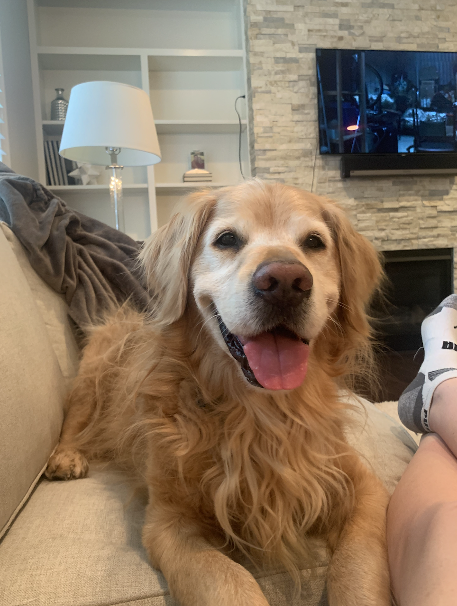Meet Murphy! He was my second dog and lived to age 13. He was the happiest puppy who always wanted to be as close to his family as possible (awwww!!!!). He loved to swim and had THE MOST enthusiasm! He prefers to spend his entire day swimming and running the field Up North.
He had many crazy adventures during his lifetime from coming face to face with a Bull that escaped a farm up north to chasing ducks to the middle of the lake. He was a very brave puppy!
Likes
Popcorn

Swimming
Running
Macy
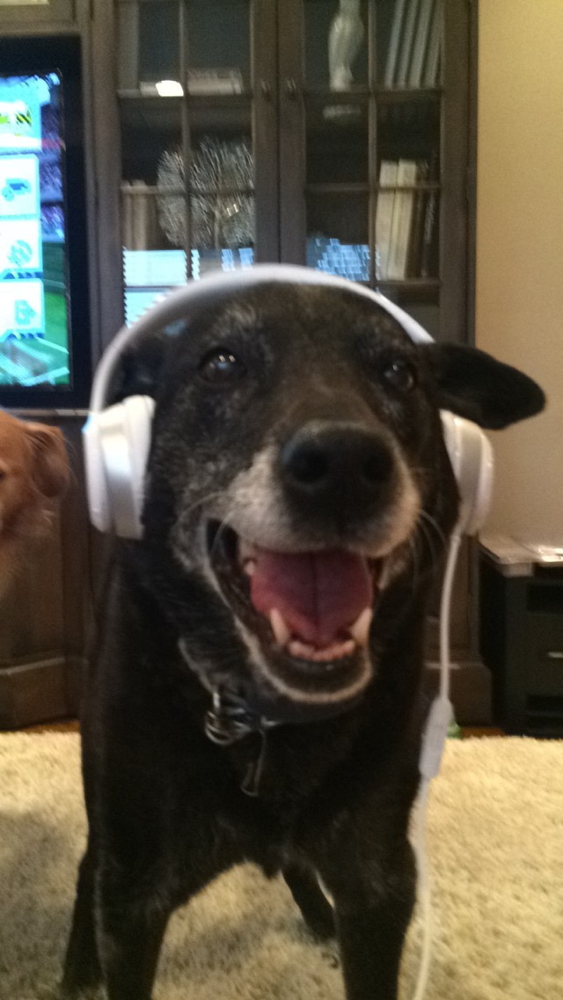Meet Macy! Macy was my first dog and lived to age 15. She was the sweetest but defintely had spunk!
Macy loved to play dress up and never failed to make me laugh by prancing around in whatever ridiculuous outfit I put her in.
Likes
Walks
Butt Scratches
Moxie
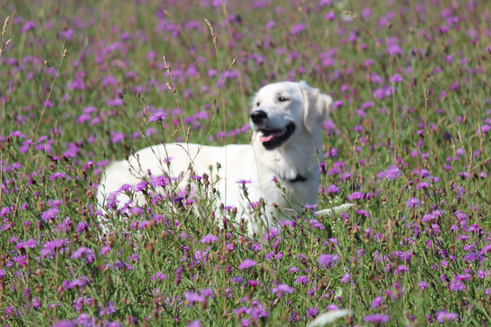Meet Moxie! Moxie is my third dog and is eight years old. Her name suits her well because just like Macy she has spunk!
Moxie never met Macy but was best friends with Murphy. She got her love for the water and up north from him!
Likes
Swimming
Tug of War
Beast
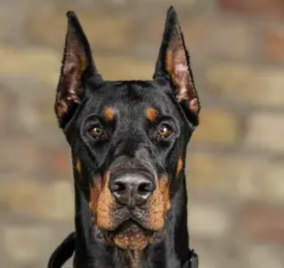Meet Beast! Beast is not yet my dog but I have a recent obsession with dobbermans and so today I am going to pretend he my dog too.
Beast might look fierce but he is a sweet heart and dreams of being a dog show winner. Together we will train and make it happen!
Likes
Roses
Winning
Snuggles
Photo Gallery


 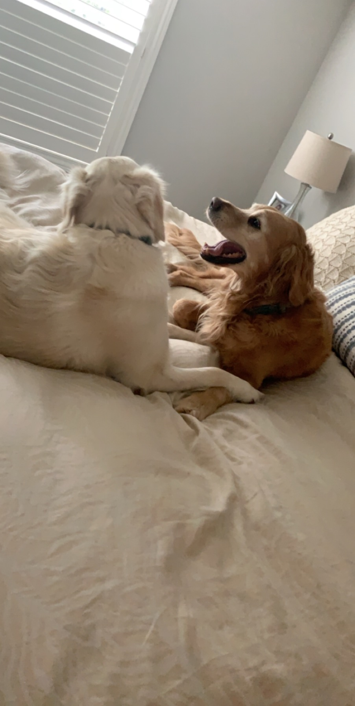
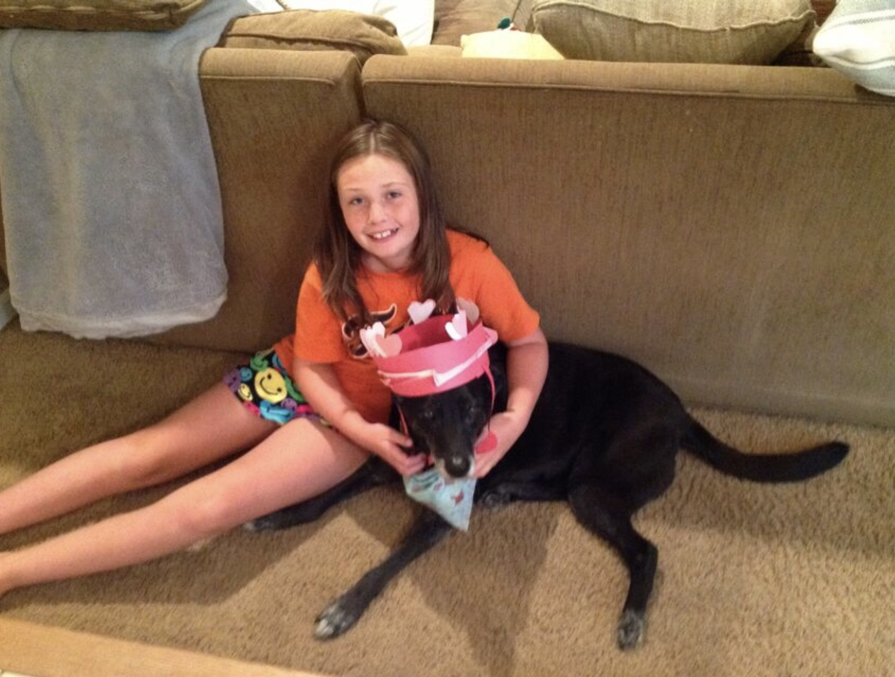
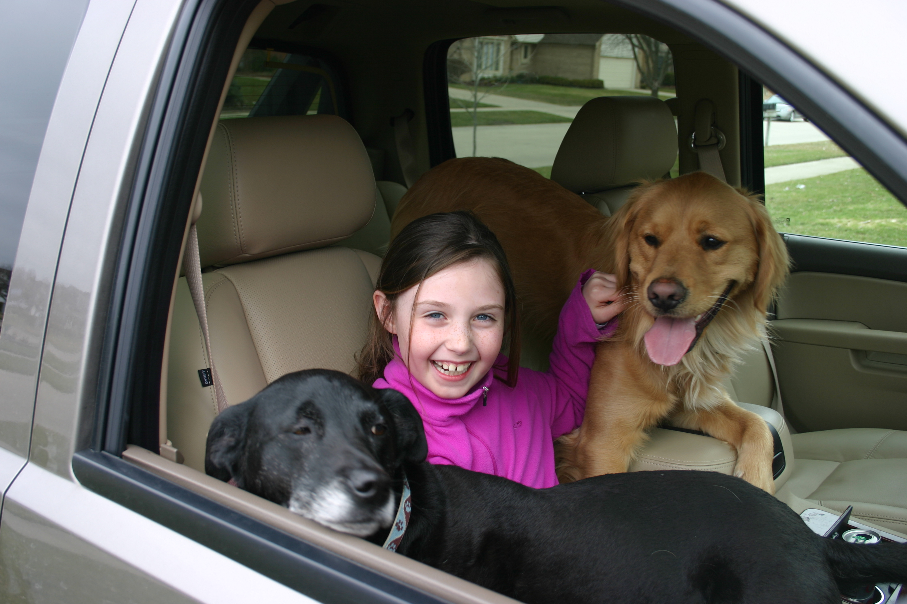
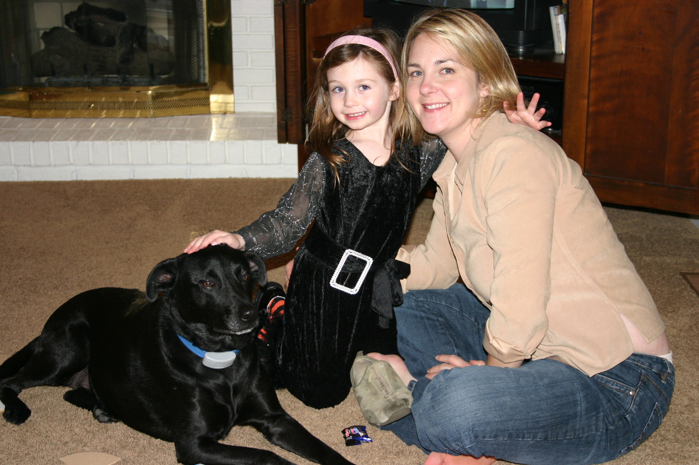
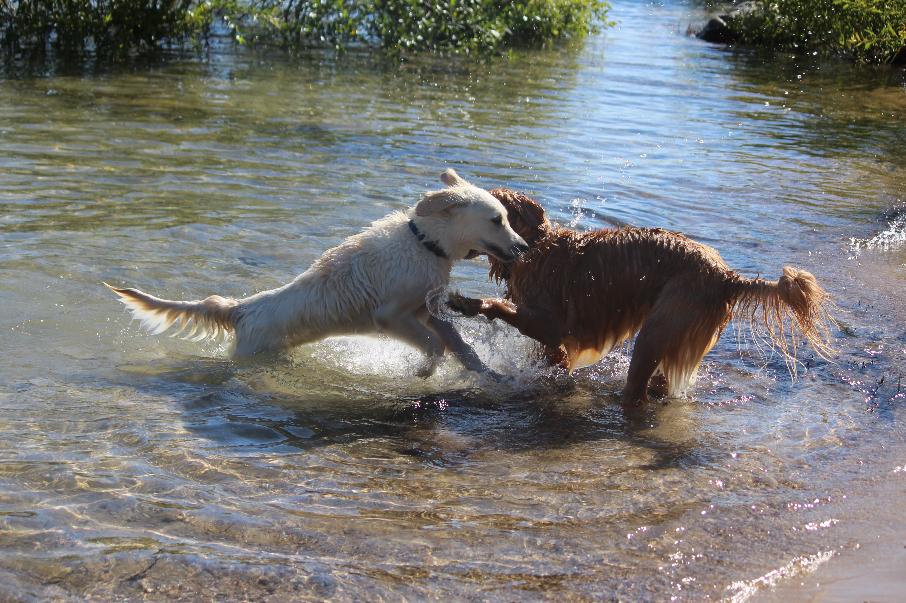
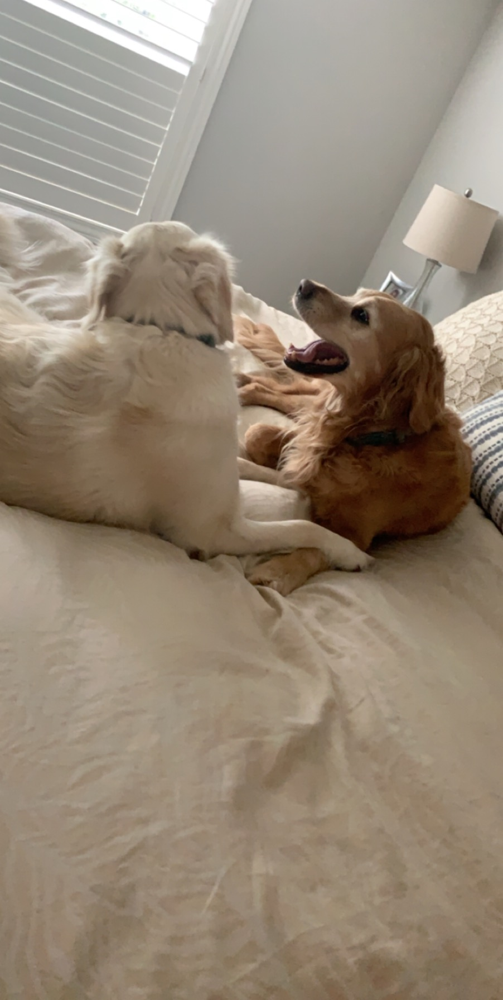
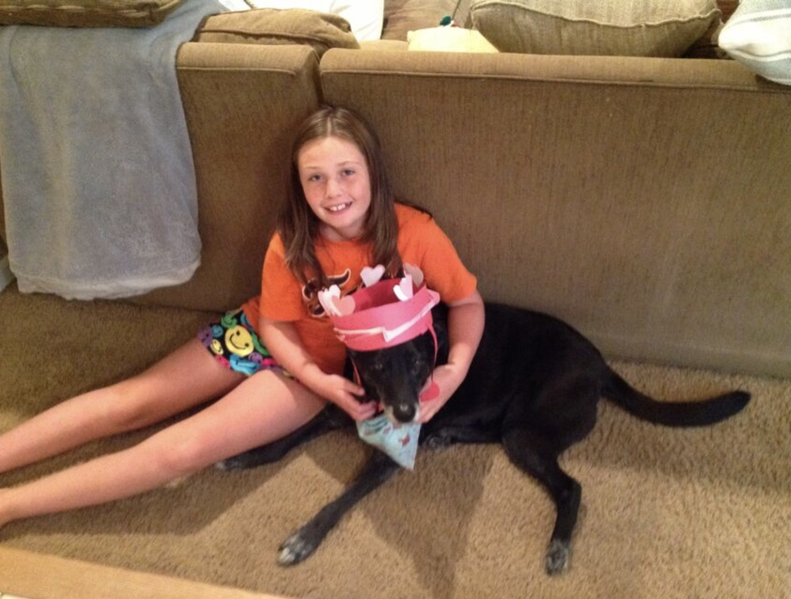
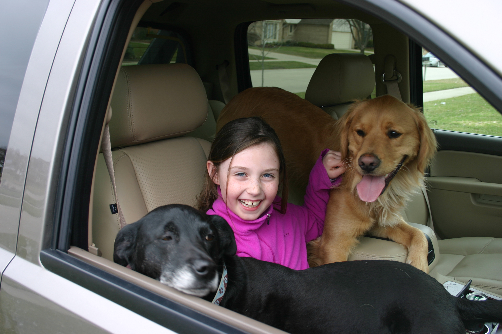
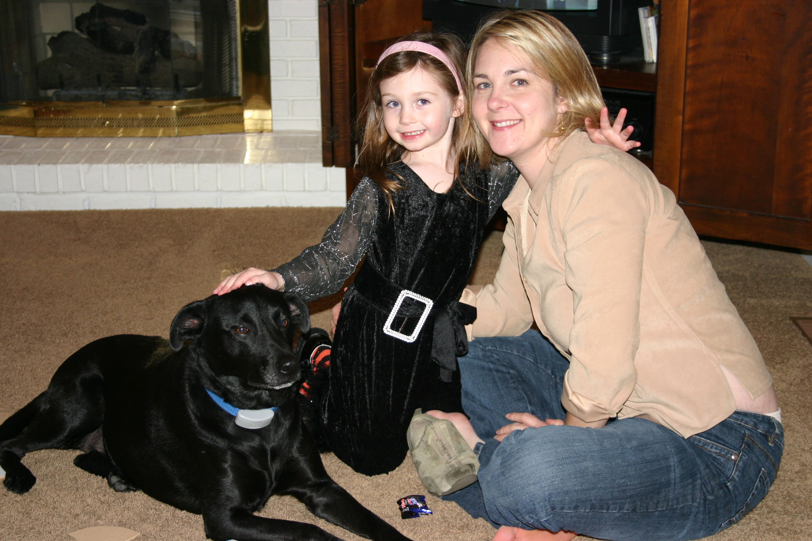
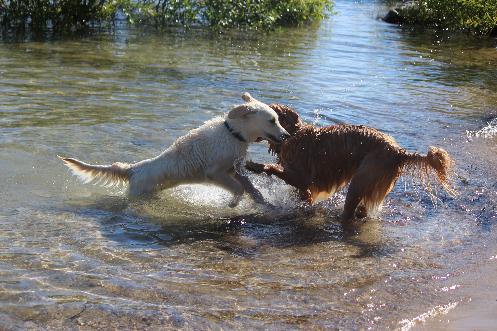
 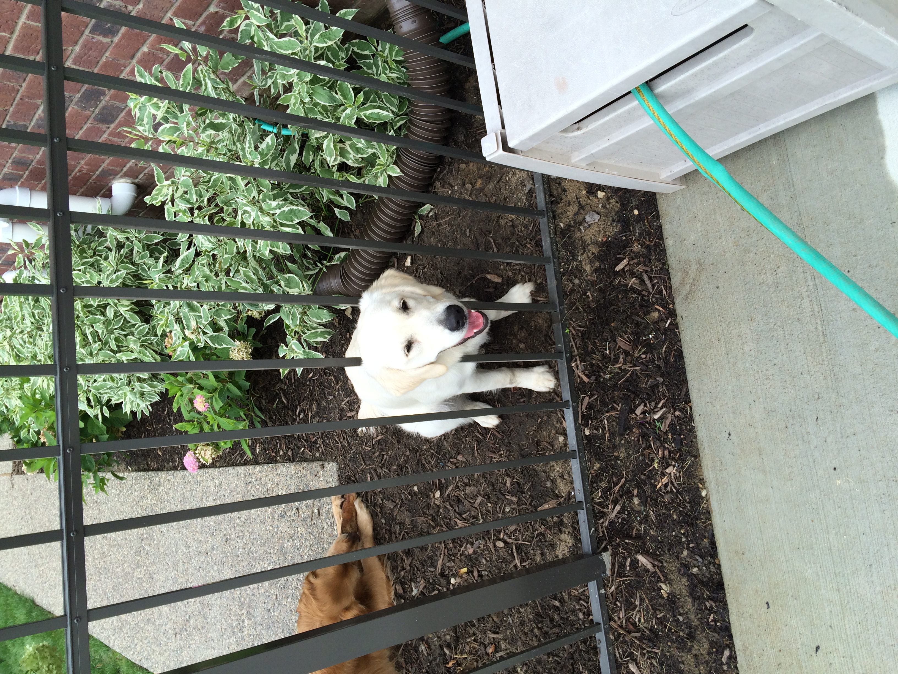
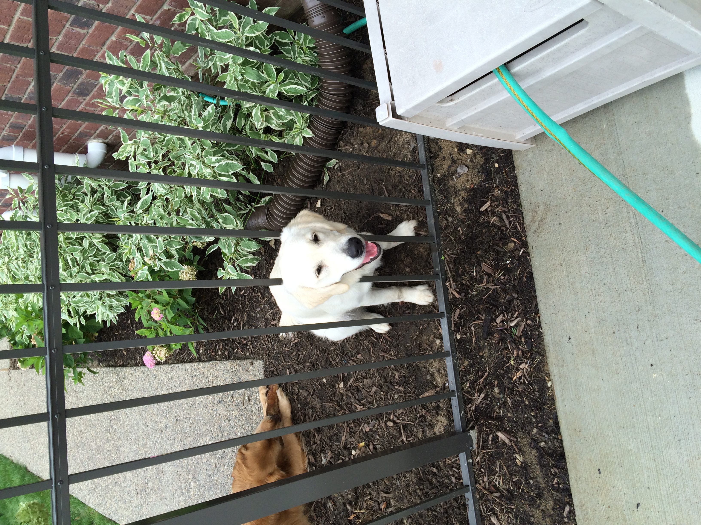